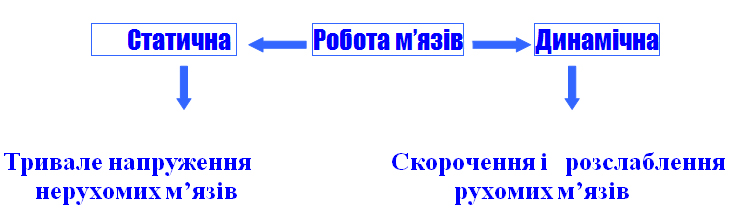
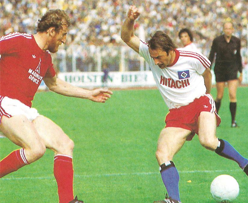

Робота і потужність м‘язів
Робота і потужність
Термін « робота» вживають тоді, коли під дією сили відбувається переміщення тіла. Наприклад, людина піднімає вантаж, кінь тягне воза, кран переносить будівельний блок…
Механічна робота виконується, якщо є дія сили і переміщення тіла внаслідок дії цієї сили.
Роботу вимірюють добутком сили на відстань, пройдену тілом вздовж напряму дії цієї сили: А=F·s
Одиничним значенням роботи в СІ є робота сили 1Н на відстані 1 м, яка називається 1 Дж: 1 Дж=1Н·1м.
Спостереження показують, що час виконання роботи може бути різним. Наприклад, учень може піднятися східцями на п‘ятий поверх за 1-2 хв, а людина похилого віку-не менше як за 5 хв. Для опису процесу виконання роботи , з огляду на його швидкість, використовують фізичну величину – потужність.
Потужність – це фізична величина, що показує швидкість виконання роботи і чисельно дорівнює відношенню роботи до часу, за який вона виконується. N=A/t
Для вимірювання потужності використовується одиниця ват ( Вт), це потужність, за якої робота в 1 ДЖ виконується за 1с.
Що таке робота м’язів
Під час скорочення м’язи здатні виконувати механічну роботу. Розрізняють статичну і динамічну роботу. Під час статичної роботи м’язи перебувають у тривалому напруженні, але не змінюють своє положення в просторі, наприклад, при утриманні вантажу, при певній поставі тіла. Статична робота дуже втомлива, особливо для дітей та підлітків.
Під час динамічної роботи скорочення м’язів чергується з їхнім розслабленням, при цьому м’язи переміщуються, наприклад під час бігу, ходіння, плавання та інших рухів. Динамічна робота менше втомлива.
Кожна фізична робота характеризується величиною навантаження і швидкістю її виконання. Дослідами встановлено, що у людини найпродуктивніша фізична робота тоді, коли вона виконується із середнім навантаженням і в середньому темпі.
Робота м’язів супроводжується витратами енергії. Енергія для скорочення м’язів утворюється внаслідок розпаду й окислення органічних сполук, здебільшого вуглеводів. Кров,що надходить до м’язів кровоносними судинами, постачає працюючим органам кисень та поживні речовини і виводить з них вуглекислий газ й інші продукти розпаду.
Що таке втома м’язів, які її причини
{kind=link}
Виконання тривалої або інтенсивної роботи спричинює втому м‘язів.Час розвитку втоми залежить від характеру праці. Не менш цікаві властивості м’язів. На тілі людини налічується близко 600 м’язів, а разом вони складають до 44% маси людини. М’язова тканина має властивість скорочуватися й розтягатися, відновлювати свою початкову форму після дії сил, які викликали її деформацію. Еластичність м’язів вища, ніж у деяких видів гуми. Еластичність м’язів, які перебувають у спокої чи в русі, різна. Звідси випливає висновок: перш ніж почати фізичні вправи, які потребують зусиль чи пов’язані з різкими рухами, необхідно зробити розминку. В іншому випадку можливі травми м’язів або їхній розрив. З віком м’язи змінюються: вони ростуть, збільшуються в об’ємі. У старшому віці товщина м’язів зменшується, їхня сила спадає. Однак, якщо людина багато рухається, займається фізичною працею, атрофія м’язів сповільнюється. Академік А.І. Берг зазначав, що в середині 19 ст. із всієї енергії, що вироблялася та споживалася на Землі, 94 % припадало на мускульну силу людей та домашніх тварин, і лише 6 % енергії виробляли водяні колеса, вітряні млини та невелика кількість парових машин. У наш час лише 1 % енергії виробляється мускульною силою. Отже, зараз мільйони людей відчувають «мускульний голод». Ця проблема, пов’язана з «мускульним голодом», стає великою медичною проблемою, тому що вона визначає стан здоров’я людини. В’ялість м’язів послаблює організм людини, викликає низку захворювань, скорочує термін її життя. Основні напрямки розв’язування цієї проблеми – навантаження м’язів за допомогою занять фізичною культурою та спортом.